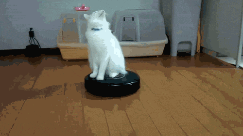

Jacky's Homepage

About Me
Hi! I'm Jacky, a first year majoring in AGPM. I'm a big fan of video games and always finding time to play, hint the major choice:3 UC Santa Cruz has always been my dream school so I'm so happy to be here, enjoying the environment and learning so much about my passion. Other than wandering the beautiful forest, I love listening to honestly all kinds of music. I enjoy trying new things that people wouldn't expect me to do like random sports, classes, foods, hobbies and what not. My favorite thing in the world are cats. I have at least 22 of them... You can learn more about me from my Pinterest!


